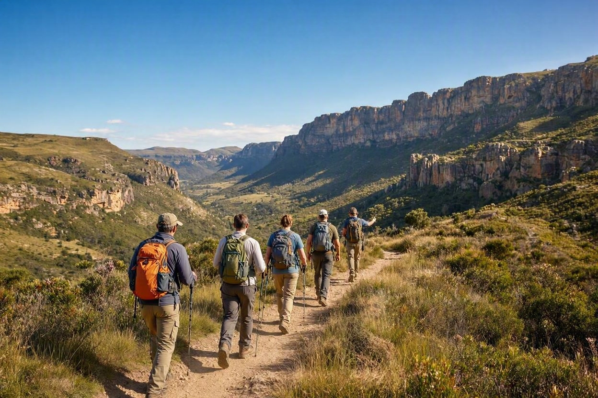
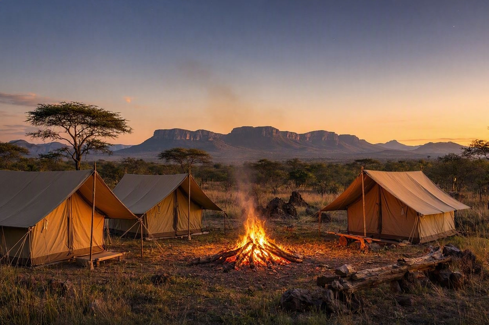
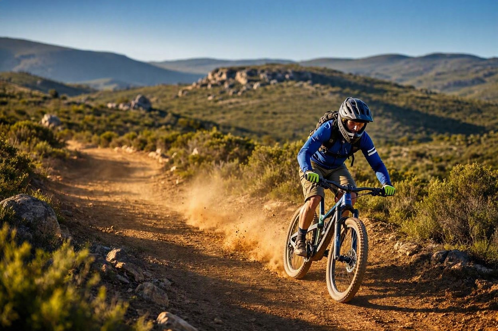

Hiking Trails

Lace up your boots and discover breathtaking mountain trails, from gentle nature walks to challenging peaks.Our guided hikes take you through some of South Africa's most stunning landscapes, with expert guides ensuring a safe and unforgettable journey
Camping Under the Stars

Escape the city and immerse yourself in the sounds of nature. Our guided camping experiences take you to some of South Africa's most breathtaking wilderness areas, where you'll sleep under a blanket of stars, share stories around a crackling campfire, and wake up to stunning natural scenery.
Mountain Biking Adventures

Feel the rush of adrenaline as you tackle thrilling mountain bike trails through South Africa's rugged terrain. Whether you're a beginner or an experienced rider, our guided mountain biking tours offer routes for every skill level, taking you through stunning landscapes you won't find anywhere else.